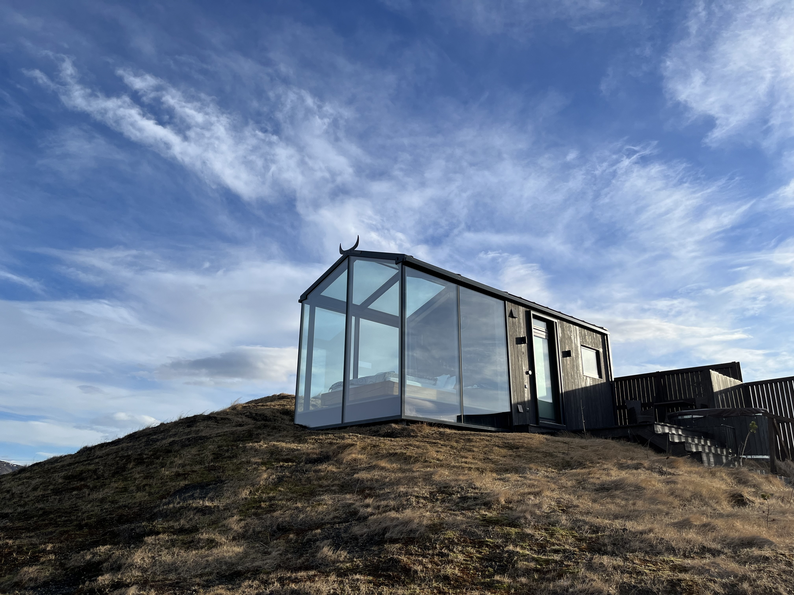
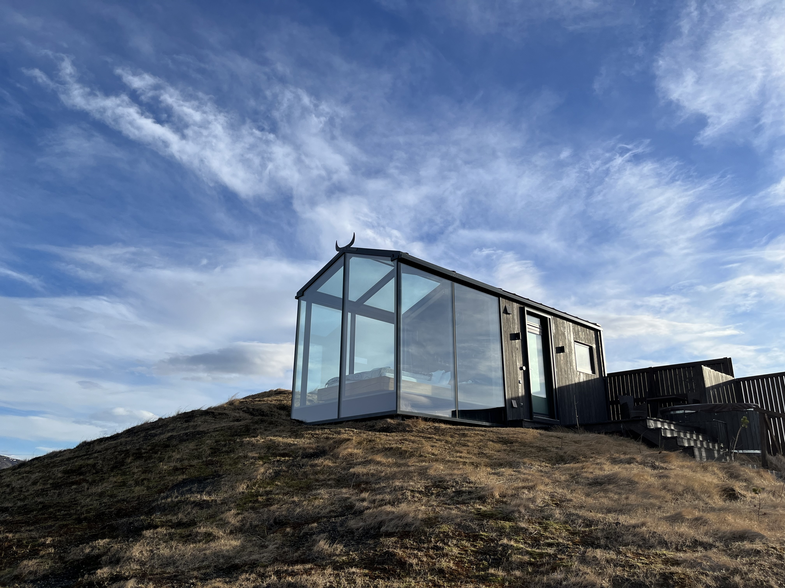

Vietnam
First on the list is the fabulous Vietnam. A cultural & culinary delight, offering wonderful hospitality and a variety of experiences to enjoy. Eating chicken cashew nut stirfry watching the blue bioluminescence as the waves crash onto the beach is a favourite memory.

Some of my absolute must see's are:
- Ha long Bay - take a boat trip to see the fishing village made famous on Top Gear.
- Hoi An - especially the full moon festival and all of the tailor stores.


Maldives
Next up is The Maldives. A true paradise. The islands are accessible only by boat or sea plane, I've honestly never been anywhere like it.
We chose to stay at Kurumba, a lovely island a short 15 minute boat ride from the airport at Male. Our reason for choosing Kurumba was due to travelling with young children. It prevented the need for another flight and it has lots of fun activities for children.

The sea and beaches are just pristine, the range of sea life is varied. Beautifully coloured fish, reef sharks and turtles frequent the area. We also witnessed pods of dolphins swimming by whilst having dinner one evening.

Dubai
Dubai offers one thing that many of us seek when looking for holiday destinations - guaranteed good weather.

Luxury hotels galore, it is very easy to find a nice all-inclusive hotel and just soak up the sun. However, downtown Dubai has lots to offer that's also well worth a trip out. If you enjoy shopping Dubai Mall is enormous. It even has an aquarium inside. The fountains outside are fabulous & the Burj Khalifa is well worth a visit.
Not much of a shopper? There are a wealth of activities to enjoy from dune buggies to water-skiing & some of the worlds best water parks.


Iceland
The Land of Fire and Ice
Iceland is a nordic wonder. There are so many things to see in Iceland, you could easily spend a month going round the island. We didn't have a month so we stuck to the Golden Circle and Reykjavik, blue lagoon areas. We stayed in a fabulous glass cabin for a couple of nights and watched the aurora from our hot tub.
 

In recent years Iceland has seen a significant increase in volcanic eruptions, mostly from the Fagradalsfjall & Grindavik areas. This volcanic activity contributes to Iceland's vast geothermal energy resources and to the hot springs/lagoons that Iceland is famous for. We visited the Silica hotel at the Blue Lagoon, which had it's own lagoons & was really fabulous.

Paris
The City of Love
Paris is a city full of history, beautiful buildings and architecture. Some of my must see's are:
- Eiffel Tower
- Arc de Triomphe
- The Louvre
- Moulin Rouge
- Sacre Coeur
- Notre Dame
- Montmartre
- Tuileries Gardens
- Palace of Versailles
- Musée d'Orsay
Also well renowned for it's outstanding food there are lots of bakeries, patisseries and restaurants throughout the city. Home to a wealth of Michelin starred restaurants, if you like to fine dine you have no shortage of choice. Maybe you can even give l'escargot a try!